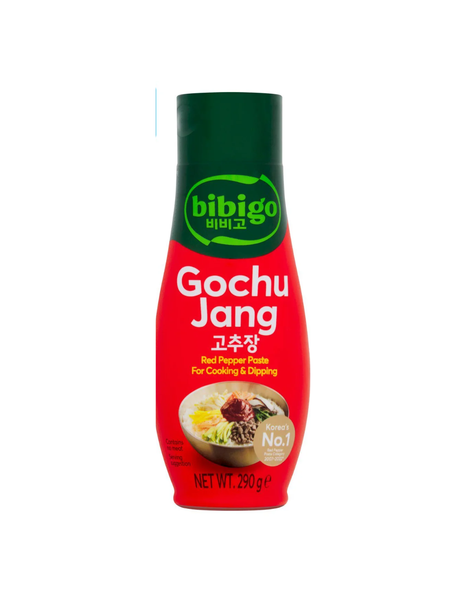
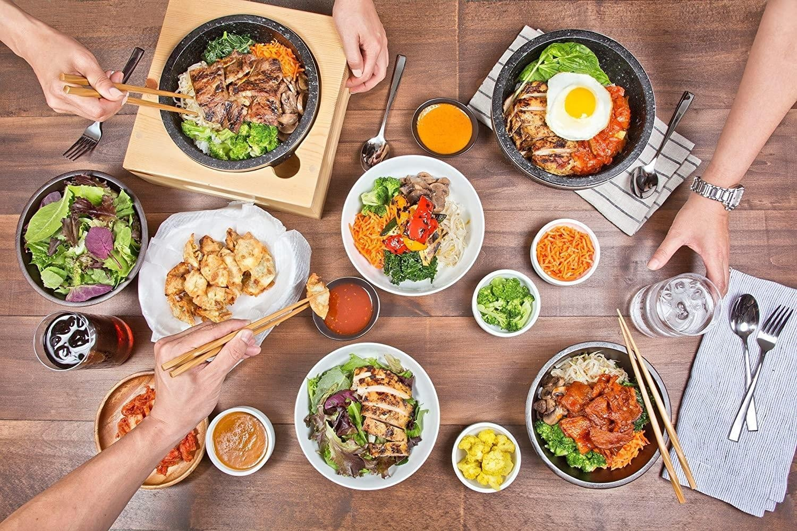

<div> <table style="border-collapse: collapse; width: 99.9809%;" border="1"><colgroup><col style="width: 49.9522%;"><col style="width: 49.9522%;"></colgroup> <tbody> <tr> <td> <div><span style="font-size: 14pt;"><strong>Bibigo Sos de ardei iute Gochujang</strong></span></div> <div><span style="font-size: 14pt;"><strong>290g</strong></span></div> <div><span style="font-size: 14pt;">Secretul iutelii perfect echilibrate. Sosul Gochujang de la Bibigo este sufletul bucatariei coreene, renumit pentru nota sa fermentata, dulce-picanta si plina de profunzime. Intr-un format practic de 290g, este ideal pentru a condimenta fripturile, pentru a imbogati sosurile de dipping sau pentru a da viata unui Bibimbap traditional.</span></div> </td> <td></td> </tr> <tr> <td></td> <td><span style="font-size: 14pt;">Bucuria meselor luate impreuna. Transforma orice cina intr-un festin coreean autentic, plin de culoare si vitalitate. De la celebrele galuste Mandu si bolurile aromate de Bibimbap, pana la garniturile traditionale, produsele noastre de import iti ofera tot ce ai nevoie pentru a impartasi cu cei dragi gustul pur al Seulului.</span></td> </tr> </tbody> </table> </div>